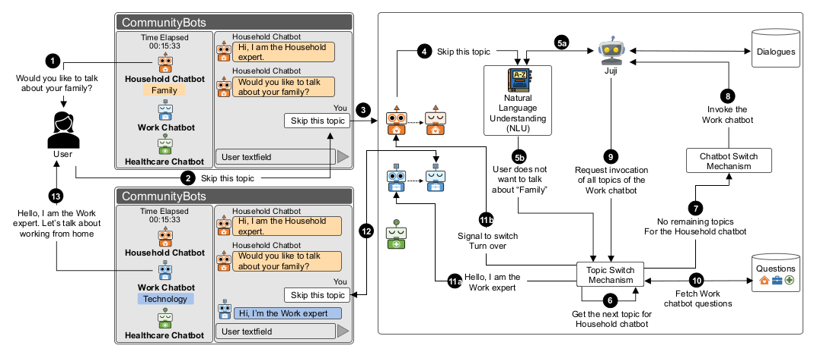
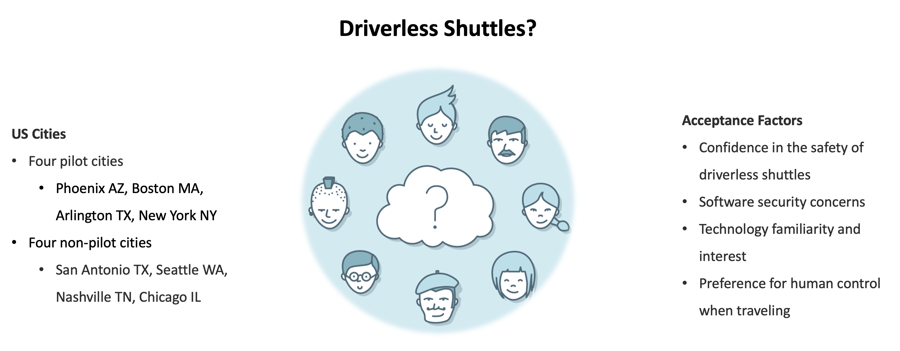
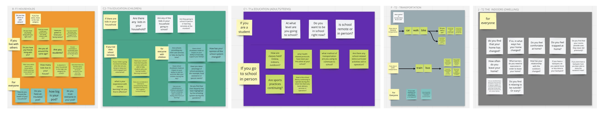
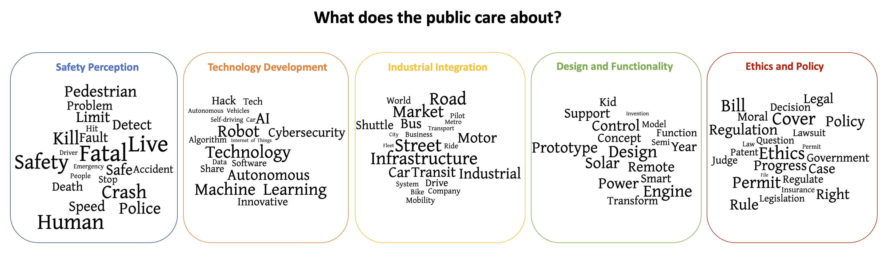
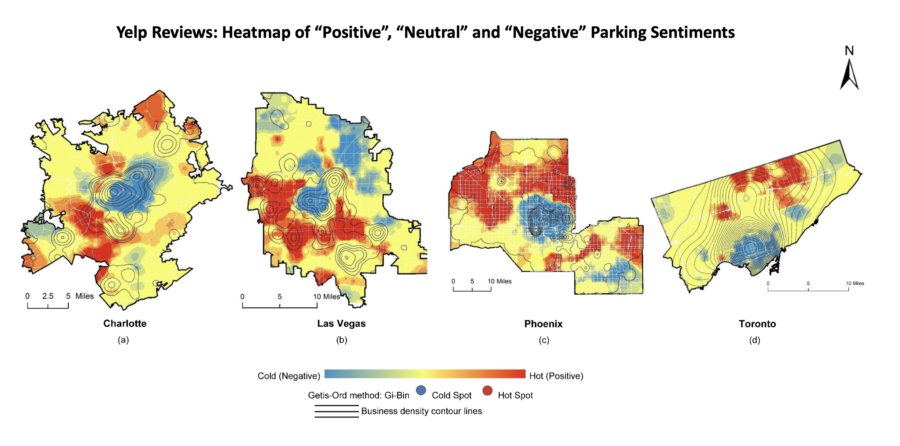

-
CommunityBots: Creating and Evaluating A Multi-Agent Chatbot Platform for Public Input Elicitation
Zhiqiu Jiang*, Mashrur Rashik*, Kunjal Panchal, Mahmood Jasim, Ali Sarvghad, Pari Riahi, Erica DeWitt, Fey Thurber, Narges Mahyar
(Accepted for the Proceedings of ACM CSCW2023)
[PDF] [DOI] -
Acceptance of Driverless Shuttles in Pilot and Non-pilot Cities
Zhiqiu Jiang, Max Zheng, Andrew Mondschein
Journal of Public Transportation. 2022.
[DOI] | [PDF] -
Mapping Instability: The Effects of the Pandemic on the Civic Life of a Small Town
Erica Dewitt, Zhiqiu Jiang, Mashrur Rashik, Kunjal Panchal, Mahmood Jasim, Fey Thurber, Cami Quinteros, Ali Sarvghad, Narges Mahyar, Pari Riahi
Environments by Design: Health, Wellbeing, and Place Conference, AMPS proceeding Series 26.2, pp. 170-181, 2022.
[PDF] -
Public Perceptions and Attitudes Towards Driverless Technologies in the United States: A Text Mining of Twitter Data
Zhiqiu Jiang, Max Zheng
Proceedings in the CUPUM (Computational Urban Planning and Urban Management) 2021: "Urban Informatics for Future Cities". 2021.
[DOI] -
Analyzing Parking Sentiment and Its Relationship to Parking Supply and the Built Environment Using Online Reviews
Zhiqiu Jiang, Andrew Mondschein
Journal of Big Data Analytics in Transportation. 2021.
[DOI] -
Synthesizing Neighborhood Preferences for Automated Vehicles
Wenwen Zhang, Kaidi Wang, Sicheng Wang, Zhiqiu Jiang, Andrew Mondschein, Robert Noland
Journal of Transportation Research Part C: Emerging Technologies. 2020.
[DOI] -
Spatial Distributions of Attitudes and Preferences Towards Autonomous Vehicles
Zhiqiu Jiang, Sicheng Wang, Andrew Mondschein, Robert Noland
Journal of Transport Findings. 2020.
[DOI] [PDF] -
Attitudes Towards Privately-Owned and Shared Autonomous Vehicles
Sicheng Wang, Zhiqiu Jiang, Robert Noland, Andrew Mondschein
Journal of Transportation Research Part F: Traffic Psychology and Behaviour. 2020.
[DOI] -
Using Social Media to Evaluate Associations Between Parking Supply and Parking Sentiment
Andrew Mondschein, David King, Christopher Hoehne, Zhiqiu Jiang, Mikhail Chester
Journal of Transportation Research Interdisciplinary Perspectives. 2020.
[DOI] [PDF] -
Examining the Effects of Proximity to Rail Transit on Travel to Non-Work Destinations: Evidence From Yelp Data for Cities in North America and Europe
Zhiqiu Jiang, Andrew Mondschein
Journal of Land Use and Transport. 2019.
[DOI] [PDF] -
Planning For Walking and Cycling in An Autonomous-Vehicle Future
Bryab Botello, Ralph Buehler, Steve Hankey, Andrew Mondschein, Zhiqiu Jiang
Journal of Transportation Research Interdisciplinary Perspectives. 2019.
[DOI] [PDF] -
Evaluating Fuel Tax Revenue Impacts of Electric Vehicle Adoption in Virginia Counties: Application of a Bivariate Linear Mixed Count Model
Wenjian Jia, Zhiqiu Jiang, Tong Donna Chen, and Rajesh Paleti
Journal of the Transportation Research Board. 2019.
[DOI] [PDF] -
New Energy in Smart Mobility: Evaluating Fuel Tax Revenue Impacts of Electric Vehicle Adoption in Virginia Counties
Wenjian Jia, Zhiqiu Jiang, Tong Donna Chen, and Rajesh Paleti
Proceedings in 2019 International Conference on Transportation and Development (ICTD). 2019.
[DOI] | [Best Paper Award] -
A Psychological Approach to ‘Public Perception’of Land-Use Planning: A Case Study of Jiangsu Province, China
Zhongqiong Qu, Yiming Lu, Zhiqiu Jiang, Ellen Bassett, and Tao Tan
Sustainability. 2018.
[DOI] | [PDF]




